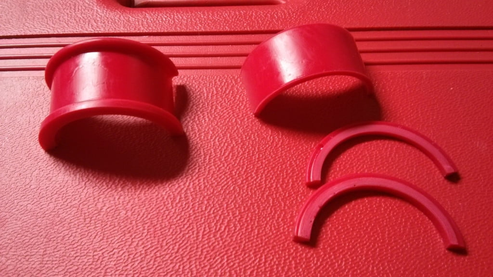

-
I bought a new rebuilt rack (TRW) from a forum member a few months ago for SS820.
It's an earlier style (my searches here tell of 3 styles), same as the one on my 84AE.
Top to bottom
AE (smurf blue…dont ask)
SS
Rebuild
I had tried to order stock bushings from nissanparts.cc but was told the drivers side
(54445-21P00) was no longer available and the passenger side (54444-58S01)
was on back order with no ETA.
I then bought Energy Suspension 7.10104R poly bushing kit off of Amazon.
I've read what i can find here and have found both yays and nays for the usage
of these bushings, saying they only work with the wider brackets. My brackets
are 15/16 wide and if those are the correct ones, here's a video of them torqued down.
These bushings have been de-glossed with abrasive paper and then wiped clean
with acetone. Surfaces that contact the bushing were left un-painted, except the brackets,
which had the OEM paint. Also shown are some brackets i pulled from an 84NA that
are the same width as the ones from the SS, they do have smaller bolt thru holes though.
As shown at end of the video, the poly bushings appear to have a smaller OD.
My thoughts are that if they have that much rotational play, they'll have lateral play
sooner or later.
My next step, before i put the old stock bushings back on is to experiment with
shims i cut from the unused (thinner) bushing that came with the energy suspension kit.

Thoughts?
84 AE/Shiro #683/Shiro #820/84 Turbo -
Yup, I had read that already. With the amount of movement I'm experiencing,
I would be hesitant to rely on the window weld to secure it. Maybe with the shim.
Also, I believe that Gary's bushings were made from a z31 bushing mold, which from
what I can tell, and will later measure for posterity, the z31 bushings are thicker than the energy suspension poly ones.
84 AE/Shiro #683/Shiro #820/84 Turbo -
I'm pretty sure 1artworkz's were beefier, when I saw one installed it looked a little squished…
Mr.510 is apparently working on delrin versions for the passenger side -
This may be a bad idea, but what about wrapping a piece of metal strapping ie: ~1" wide and ~1/16" thick around part or all of the steering rack so that it will clamp down tight and not move rotationally? I would tack weld the strip onto either the hold down or onto the rack itself.
If im completely out of line on this idea, I havent removed the steering rack to attempt new bushings yet, just looking at ideas since it is on my list of things to do.'85 300zx turbo: exhaust, intercooler, coilovers, etc…SOLD, will be missed
'86 300zx turbo: starting over
'97 Dodge 2500: 12v Cummins …selling and will be missed
'94 Jeep Cherokee: D60 Front 14b rear, both locked and 5.38 gears, 37" mtr's
2015 Ram 2500 megacab laramie cummins black appearance package -
I have Gary's poly rack bushings and they were loose as well.
I ended up getting a long strip of 1" in width and 1/8" in thickness aluminum, cutting it to size and then forming it to the contour of the rack bracket.
I then sandwiched it between the poly and rack bracket.
My power steering is now very tight and responsive, no longer loose. -
I shimmed the drivers side on the top and bottom and the passengers side on the top only.
3 shims were required, i had bought 2 kits. McMaster sells a 1/8"X1.0"X48" urethane strips with an adhesive backing in varying harnesses (40A, 60A, 90A) that shims could also be made from (PN 8997K51).
I shaved the bump on the drivers side as it's meant for the mating recess of a S13 cross member, I figured that increasing the flat contact area the shim had with the surface of the bushing would be better. I was also concerned that the bump may eventually cause the shim to drift to one side or the other.
With this tighter setup, i would imagine some window weld would help keep things from moving anymore (As per garys instructions)
84 AE/Shiro #683/Shiro #820/84 Turbo -
I believe someone is also working on solid rack bushings. I have seen a picture of a prototype set being tested, but no word on production.
I have also been battling steering rack bushings on the 85t. Was just hoping to order OEMs to avoid all this shit, but being NLA I was lucky enough to snag a set of Gary's.86na - BlueZ
Shiro #366 - Kouki Monster
85t - Mr Tickles -
I'm in for the info on something I can use on the Shiro.
1988 300ZX Turbo, Shiro Special #760
1988 300ZX Turbo Automatic (wife's car)
1991 Hard-body 2WD
http://zccw.org/zccw/?page_id=1215 -
So i bought the energy suspension bushings from Amazon, and another shopper asked the question
if they would work on her 91 M30. This got me thinking as i know the M30 shares more than a couple
parts from the Z31 platform.
M30 bushing part numbers are: 54444-41L01 drivers side, and 54445-42L00 for the passenger side.
If these are available, maybe someone can give them a try.
http://www.partsbase.org/infiniti/m3…gear-mounting/
http://product-ecatalog.com/shaauto/…-954-484.html#
84 AE/Shiro #683/Shiro #820/84 Turbo -
M30 is pretty much identical to Z31 setup - rack mount wise. PO put Z32/S13/14 poly bushings on it, yeah they're better than the destroyed rubber that was on it, but mine still shifts…annoyingly. so I need to figure out a solution too! solid/delrin would be amazing!Damn dirty angels....these cars!
Current Daily Driver - 86 Turbo.
Under the cover - THE BANANA… that needs to be re-energized.
sigpic -
I recently installed the derlin mount on the passenger side. I bought it fro ASCO. I have one word, SOLID! No give No play No shift. Thanks Zack! -
I wonder if anyone Tried the M30 bushings yet?Originally posted by Z_Karma View Post

Copyright © 2006–. All rights reserved. Privacy Policy